01はじめに その一泊が、人生の景色を変える
「一泊で数万円、ときには十万円を超えるホテルなんて、もったいない」。
かつての私も、そう思っていました。
同じ寝るだけの部屋なら、安いビジネスホテルで十分ではないか。
その差額があれば、もっと有意義なことに使えるのではないか。
そう考えるのは、とても真面目で、堅実な感覚です。
けれど、あるとき思いきって泊まった一軒のラグジュアリーホテルが、その価値観を静かに、しかし決定的に変えてしまいました。
チェックインの瞬間の丁寧な出迎え、静寂に包まれた客室、驚くほど深く眠れた朝。
翌日、私は別人のように軽い心で日常へ戻っていったのです。
あの一泊で使ったお金は、「消えた」のではなく、心の奥に確かな資産として残りました。
本書が伝えたいのは、たった一つのことです。
ラグジュアリーホテルに泊まることは、贅沢や浪費ではなく、科学的に裏づけられた「人生を豊かにする自己投資」である。
この事実を、感覚論ではなく、心理学・幸福科学・業界データという確かな根拠とともにお届けします。
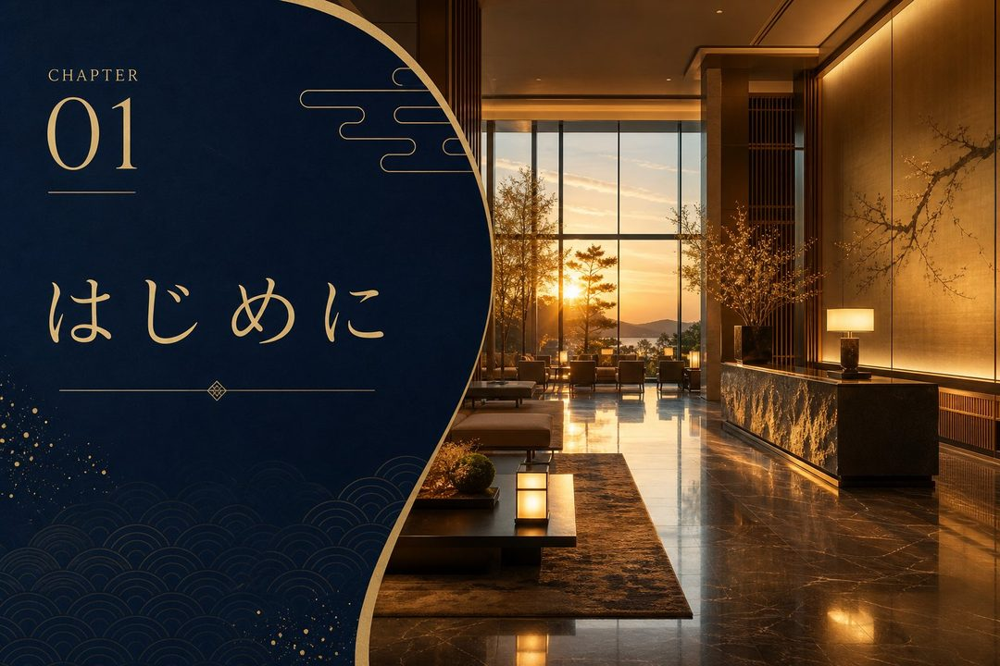
はじめに
コーネル大学の心理学者トーマス・ギロビッチは、20年以上にわたる研究でこう結論づけました。
「モノを買うより、経験を買うほうが、人は長く幸せになる」。
旅行や上質な滞在といった経験は、時間が経つほど記憶の中で輝きを増し、他人と比べて色あせることがなく、そして何より「自分という物語」の一部になっていくのです。
一方で、多くの人が抱える悩みもよく分かります。
「贅沢＝悪」という罪悪感、日々の疲れとストレス、記念日を特別にしたいのにやり方が分からない、そもそも高級ホテルの敷居が高い——。
本書は、そうした思い込みをデータで一つずつ解きほぐし、あなたが安心して最初の一歩を踏み出せるよう設計しました。
第1章では「贅沢は浪費」という誤解を科学で覆します。
第2章では、ラグジュアリーホテルがもたらす「期待・滞在・回想」という三段階の幸福を解説します。
第3章は睡眠とウェルネス、第4章はホスピタリティと自己肯定感、そして第5章では、後悔しないホテルの選び方と、豊かさを最大化する泊まり方を具体的にお伝えします。
読み終えたとき、あなたはきっと、次の休日に泊まる一軒を探し始めているはずです。
さあ、人生の景色を変える一泊への扉を開きましょう。
02第1章 「贅沢」は誤解だった — ラグジュアリーホテルは科学が認めた自己投資
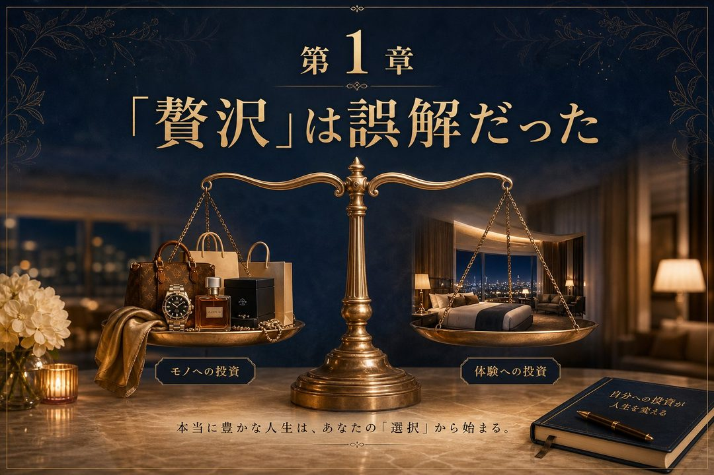
第1章 「贅沢」は誤解だった
モノより経験にお金を使う人が、幸せになる理由
「同じお金を使うなら、後に残る形あるモノを買ったほうが得ではないか」。
多くの人が、無意識にそう信じています。
しかし、幸福を研究する科学者たちの答えは、真逆でした。
コーネル大学の心理学者トーマス・ギロビッチは、20年以上にわたって「お金と幸福の関係」を研究してきました。
その結論は明快です。
旅行や食事、上質な滞在といった「経験への支出」は、同じ金額の「モノへの支出」よりも、長く続く幸福をもたらす。
この発見は、消費心理学の分野で繰り返し検証され、今では定説となっています。
なぜ、経験はモノに勝つのでしょうか。
ギロビッチは、三つの理由を挙げています。
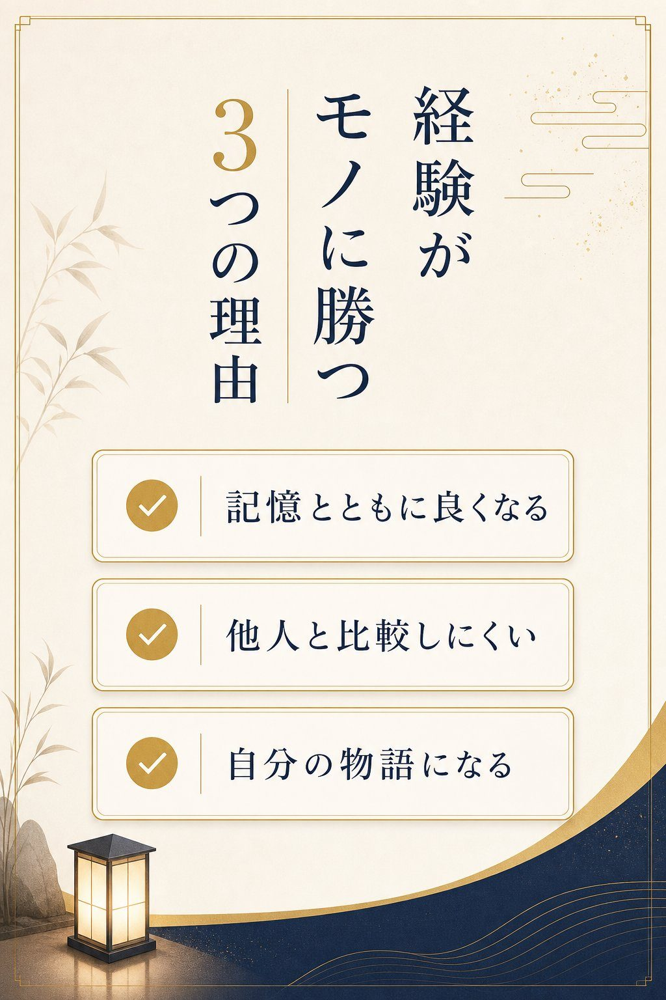
経験がモノに勝つ3つの理由
第一に、経験は記憶とともに良くなっていくという点です。
買ったばかりのバッグや時計は、手に入れた瞬間が幸福のピークで、その後は少しずつ色あせていきます。
ところが、素晴らしいホテルで過ごした夜の記憶は、時間が経つほど美化され、思い出すたびに温かい気持ちを運んでくれます。
モノは古びるが、経験は熟成する。
この違いは決定的です。
第二に、経験は他人と比較しにくいという点です。
隣人がより高級な車を買えば、あなたの車の価値は相対的に下がったように感じます。
モノは常に比較にさらされ、嫉妬や不満を生みます。
けれど、あなたが大切な人と過ごしたホテルの一夜は、世界に一つだけの体験です。
誰かの体験と優劣を競う必要がありません。
第三に、経験は「自分という物語」の一部になるという点です。
私たちは、所有物ではなく体験によって自分を語ります。
「あのホテルで見た朝焼けが忘れられない」——そうした記憶の積み重ねが、あなたの人格と人生の物語を形づくっていくのです。
「もったいない」の正体と、その反論
とはいえ、「一泊数万円はもったいない」という感覚は根強いものです。
この罪悪感の正体を、少し分解してみましょう。
「もったいない」と感じるとき、私たちは無意識に「支出した金額」と「物理的に受け取ったもの」を比べています。
ビジネスホテルもラグジュアリーホテルも、提供されるのは「一晩の睡眠」だと考えれば、確かに価格差は不合理に見えます。
しかし、この見方こそが落とし穴なのです。
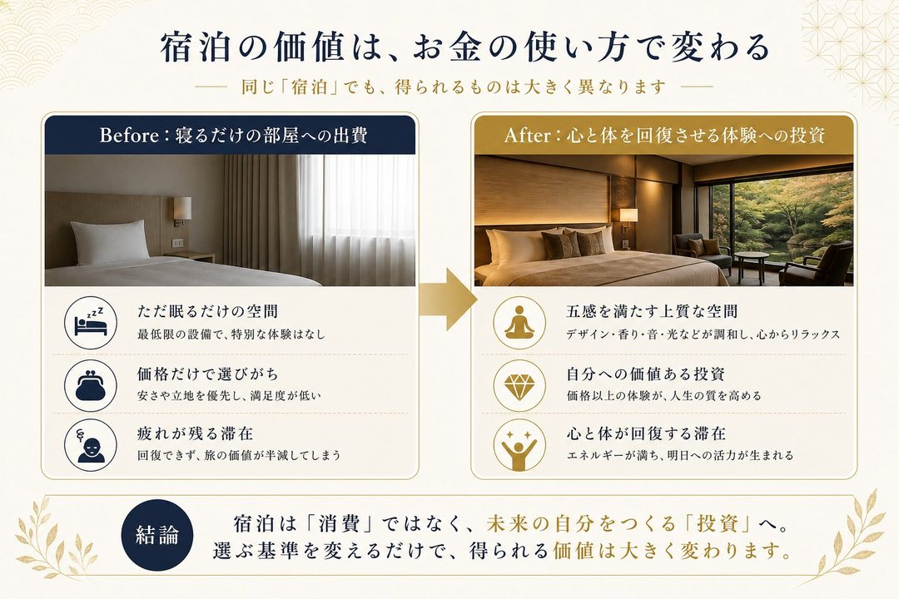
「もったいない」から「自己投資」へ
ラグジュアリーホテルで受け取るのは、単なる睡眠ではありません。
心をほどく静寂、五感を満たす美しさ、深く回復する眠り、そして「大切にされている」という実感。
これらは、疲弊した現代人にとって、何よりも希少で価値ある資源です。
あなたが投資しているのは「部屋」ではなく、「翌日からの自分のコンディションと、一生残る記憶」なのです。
考えてみてください。
ジムの会費や資格取得の費用を「もったいない」とは言いません。
それが自分への投資だと理解しているからです。
ラグジュアリーホテルもまったく同じです。
心身を回復させ、視野を広げ、明日への活力を生む——これ以上ないほど本質的な自己投資なのです。
富裕層の75%が「モノより体験」を選んでいる
この考え方は、決して一部の理想論ではありません。
実際の消費行動データが、それを裏づけています。
米国の富裕層消費調査（Affluent Consumer Research Company）によれば、高級消費者の75%が「モノより体験」への支出を優先していると回答しました。
経済的に成功し、欲しいモノを一通り手にした人ほど、次に価値を見いだすのは「体験」なのです。
彼らは経験則として、体験こそが人生を豊かにすることを知っています。
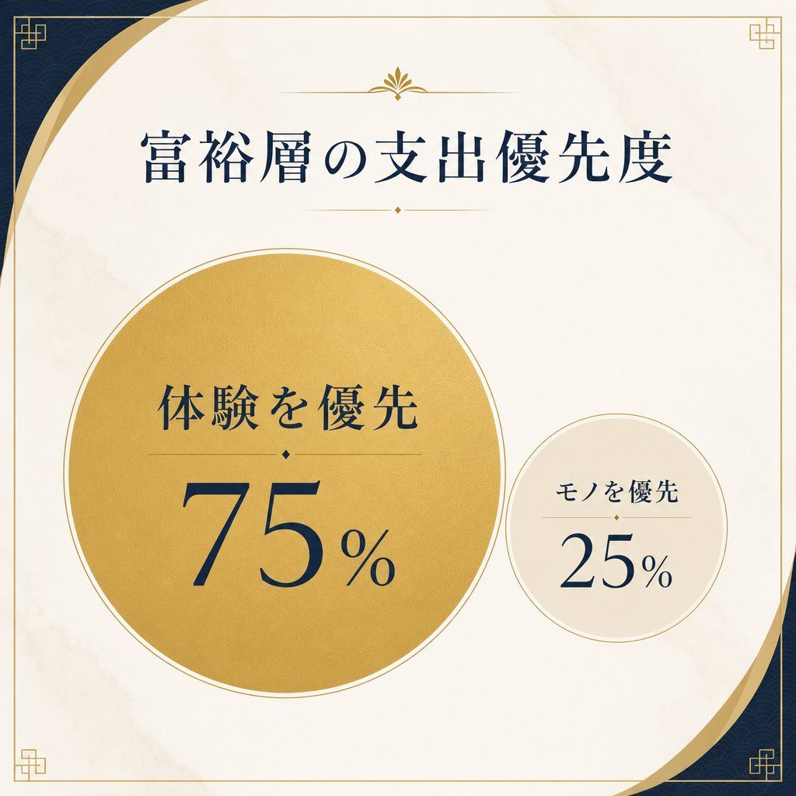
富裕層の支出優先度
さらに、日本のラグジュアリーホテル市場そのものが、この流れを映し出しています。
市場規模は2023年の約1兆円から、2028年には約1兆4,500億円へと成長すると予測され、年平均成長率は約7.5%にのぼります。
多くの人が「非日常の体験」に価値を見いだし、その扉を叩き始めているのです。
「贅沢はよくない」という価値観は、モノが不足していた時代の名残かもしれません。
モノがあふれる現代において、真に人生を豊かにするのは、心を満たす経験です。
ラグジュアリーホテルへの一泊は、時代が証明しつつある「賢いお金の使い方」なのです。
「費用対効果」を正しく計算する
それでもなお、「一泊数万円」という数字を前にすると、多くの人が身構えてしまいます。
ここで大切なのは、費用対効果を「正しく」計算することです。
私たちは往々にして、コストは大きく見積もり、リターンは小さく見積もってしまう傾向があります。
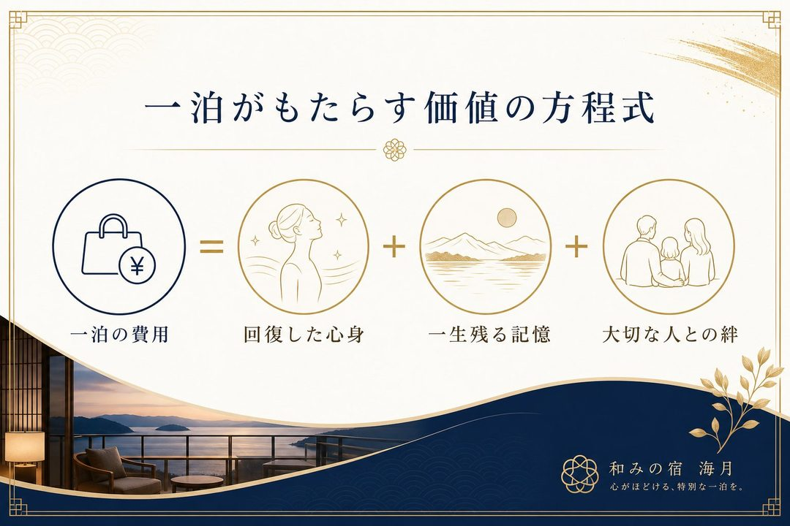
一泊がもたらす価値の方程式
たとえば、三万円の一泊を考えてみましょう。
私たちはつい「三万円で一晩」と計算します。
しかし本当のリターンは、その一晩だけではありません。
予約してから当日までの数週間の「期待」という楽しみ、深い眠りで回復した翌日以降のパフォーマンス、一生思い出せる「記憶」、そして大切な人と分かち合った「絆」——これらすべてが、たった一度の支出から生まれる配当です。
こう考えると、費用対効果の計算式はまるで違って見えてきます。
一晩三万円は「高い」のではなく、その後の数週間、いや一生にわたって効果を発揮する投資なのです。
日々のストレスで判断力や気力が落ちれば、仕事でも人間関係でも見えないコストが積み重なります。
心身を整えることは、そうした「見えない損失」を防ぐ守りの投資でもあるのです。
さらに言えば、私たちは日常の小さな出費——なんとなく寄るカフェ、惰性で続ける課金、ストレス発散の衝動買い——には無頓着なくせに、人生を豊かにする大きな体験には過剰に慎重になります。
同じお金なら、記憶に残らない消費より、一生残る経験に使う。
それが、幸福の科学が教える、最も賢いお金の使い方です。
世界のエリートが「体験」に投資する理由
世界的に成功した経営者や富裕層の消費行動を観察すると、ある共通点が浮かび上がります。
彼らは、若い頃はモノを追い求めても、成熟するにつれて、確実に「体験」へと支出の軸足を移していくのです。
高級車や豪邸を一通り手にした人が、最終的にお金を使うのは、旅であり、学びであり、人との時間です。
これは単なる気まぐれではありません。
「モノがもたらす満足には限界があり、体験がもたらす満足には限界がない」ことを、彼らは経験から知っているのです。
前述のとおり、富裕層の75%が「モノより体験」を優先するという調査結果は、この事実を数字で裏づけています。
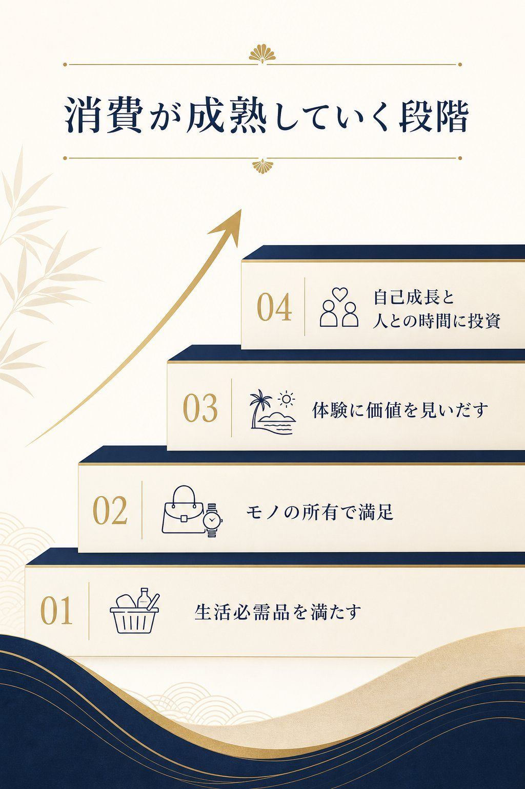
消費が成熟していく段階
興味深いのは、この「体験重視」の価値観が、いまや富裕層だけのものではなくなっているという点です。
SNSの普及で、誰もが自分の体験を発信し、共有できるようになりました。
その結果、「何を持っているか」より「どんな経験をしたか」が、その人らしさを表す時代になったのです。
ラグジュアリーホテルへの滞在は、まさにこの時代の価値観に沿った、豊かさの表現だと言えます。
大切なのは、体験への投資に「早すぎる」も「遅すぎる」もないということです。
あなたが人生を豊かにしたいと願った、まさにその瞬間が、最良のタイミングなのです。
成功してから、余裕ができてからと先延ばしにする必要はありません。
上質な体験は、これからのあなたの人生をより良く導く羅針盤になります。
この章のまとめ
経験への支出は、モノへの支出よりも長く続く幸福を生みます。
それは、経験が記憶とともに熟成し、他人と比較されず、自分の物語になるからです。
「もったいない」という感覚は、受け取る価値を「部屋」に限定した誤解に過ぎません。
あなたが投資するのは、心身の回復と一生の記憶です。
ラグジュアリーホテルは、科学とデータが認めた、最も本質的な自己投資なのです。
03第2章 三段階の幸福 — 期待・滞在・回想があなたの人生を彩る
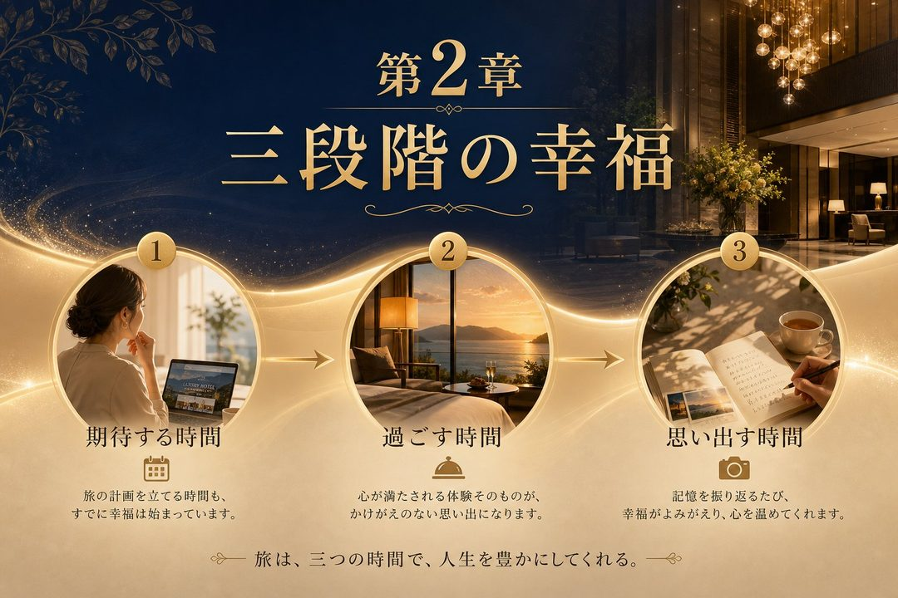
第2章 三段階の幸福
幸福は「泊まる前」から始まっている
ラグジュアリーホテルがもたらす幸福には、実は「宿泊当日」だけではない、驚くべき広がりがあります。
心理学者たちは、経験がもたらす幸福を「期待・体験・回想」という三つの時間軸でとらえます。
そして、その最初の段階——「期待」——が、想像以上に大きな喜びを生むことが分かっています。
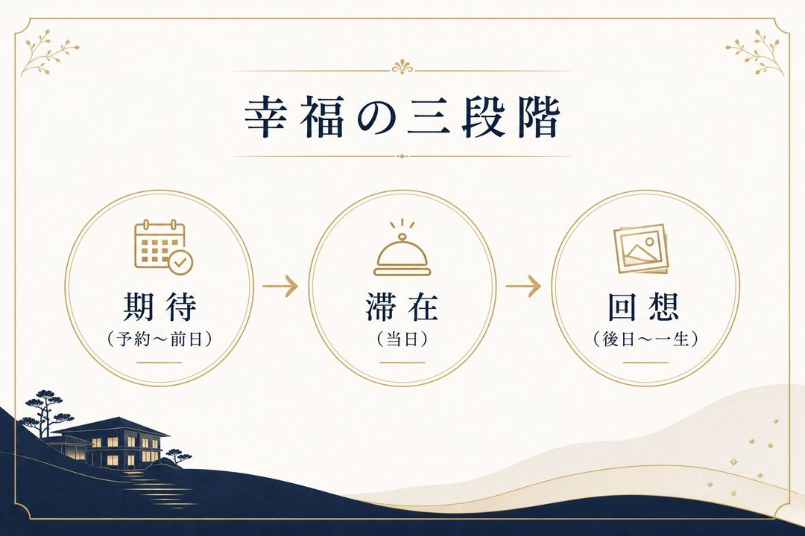
幸福の三段階
テキサス大学オースティン校などの研究チームは、興味深い実験を行いました。
人々が「これからモノを買う」ことを考えているときと、「これから旅行や体験にお金を使う」ことを考えているときの気分を比較したのです。
結果は明確でした。
体験を心待ちにしている人のほうが、その瞬間の幸福感が高く、より強い高揚感とワクワクを感じていたのです。
つまり、ラグジュアリーホテルを予約した瞬間から、あなたの幸福はもう始まっています。
「どんな部屋だろう」「どのレストランで食事しよう」「あの温泉に入ろう」——予約から当日までの数週間、あなたは何度も心の中で楽しい旅を先取りするのです。
この「期待の時間」こそ、ラグジュアリーホテルがくれる隠れた贈り物です。
モノを衝動買いしたときの高揚は一瞬で消えます。
しかし、上質な滞在の予約は、日常の中に「楽しみ」という光を灯し続けてくれます。
仕事がつらい日も、「あと三週間であのホテルだ」と思えば乗り越えられる。
期待は、それ自体が心の栄養なのです。
「記憶する自己」が人生の幸福を決める
滞在当日の幸福については言うまでもありません。
しかし、本当に重要なのは、その体験が「どう記憶に残るか」です。
ここで、ノーベル経済学賞を受賞した心理学者ダニエル・カーネマンの理論が力を発揮します。
カーネマンは、人間には二つの自己があると説きました。
「経験する自己」と「記憶する自己」です。
「経験する自己」は今この瞬間を生きていますが、その瞬間は過ぎ去れば消えてしまいます。
一方、私たちの人生の満足感を実際に支配しているのは「記憶する自己」——つまり、後から思い出したときにどう感じるか、なのです。
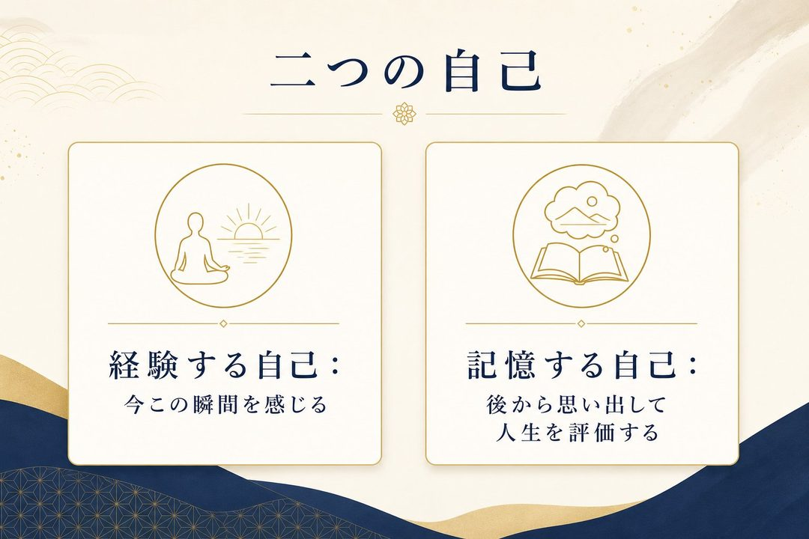
二つの自己
そして、記憶する自己には明確なクセがあります。
それが「ピーク・エンドの法則」です。
カーネマンらの研究によれば、人がある体験を後から振り返るとき、その評価は「感情のピーク（最高潮の瞬間）」と「エンド（終わり方）」でほぼ決まり、体験の長さはほとんど無視されるのです。
これを「持続時間の無視」と呼びます。
旅行研究でも、休暇の満足度の記憶は「最も印象的だった24時間」と「旅の終わり方」に最も強く相関することが確認されています。
私たちの記憶は、体験の総量ではなく、その頂点と締めくくりでつくられるのです。
ラグジュアリーホテルは「記憶」を設計している
ここにこそ、ラグジュアリーホテルの真価があります。
一流ホテルは、この「ピーク・エンドの法則」を——意図的にせよ経験的にせよ——完璧に体現しているのです。
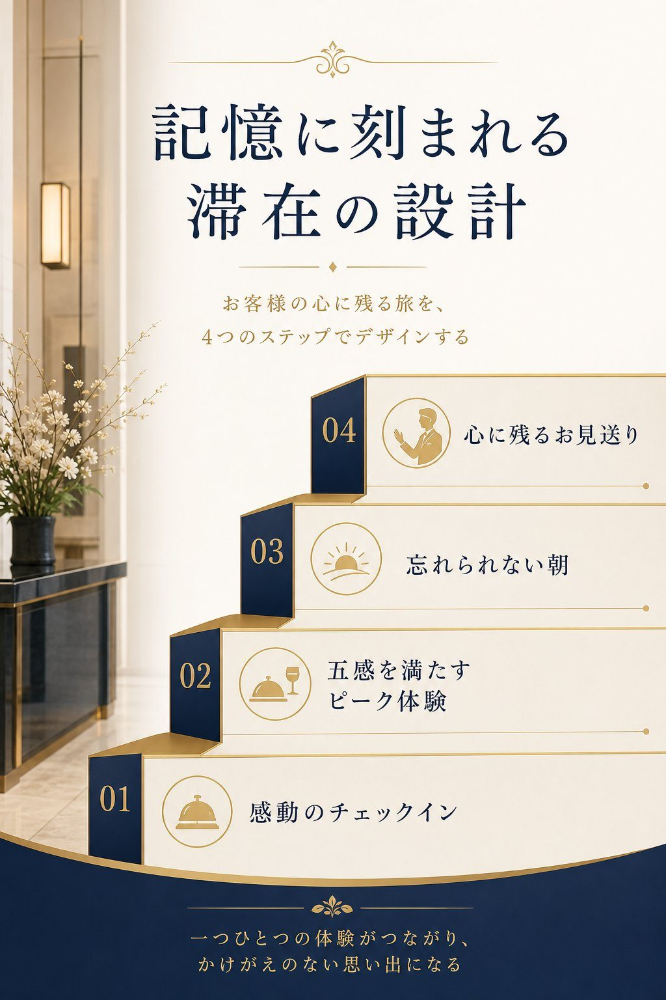
記憶に刻まれる滞在の設計
洗練されたチェックインの出迎え、目を見張る客室の眺め、シェフが腕を振るう極上のディナー、驚くほど深い眠り、そして名残惜しさを感じさせる丁寧なお見送り。
ラグジュアリーホテルの体験は、随所に「感動のピーク」が配置され、そして必ず「美しい締めくくり」で終わります。
だからこそ、その一泊は強烈に記憶に刻まれ、何年経っても色あせません。
安価な宿泊が「可もなく不可もない、すぐ忘れる一夜」で終わるのに対し、ラグジュアリーホテルの一泊は「一生思い出せる記憶の資産」になる。
この違いは、支払った金額の差をはるかに超える価値を生みます。
あなたの人生を振り返ったとき、輝いて見えるのは、こうした特別な記憶の一つひとつなのです。
旅行の幸福は「慣れ」に強い
もう一つ、経験が持つ強力な特性があります。
それは「幸福の慣れ（hedonic adaptation）」に抵抗する力です。
人は、どんなに嬉しいことにもすぐ慣れてしまう生き物です。
新車を買った喜びも、昇給の喜びも、数か月もすれば当たり前になり、幸福感は元の水準に戻ります。
これを心理学では「快楽適応」と呼びます。
ところが研究によれば、旅行や上質な体験は、この慣れによる幸福の減衰を強く抑えることが分かっています。
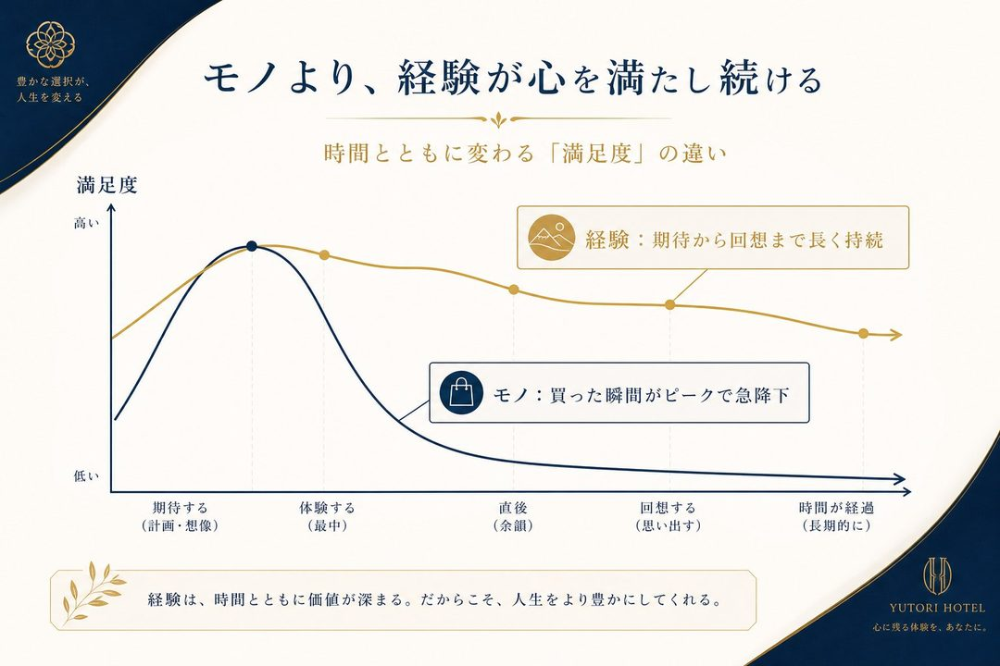
モノと経験、幸福の持続の違い
理由は、経験が「期待・滞在・回想」の三段階で幸福を供給し続けるからです。
滞在が終わっても、写真を見返し、誰かに語り、ふと思い出すたびに、幸福が何度も蘇ります。
一度の投資が、何年にもわたって配当を生み続ける。
これほど利回りの良い投資が、ほかにあるでしょうか。
「語れる体験」が幸福をさらに増幅する
回想の幸福には、もう一つ見逃せない側面があります。
それは、体験を「誰かと分かち合う」ことで、幸福がさらに増幅されるという事実です。
経験がモノに勝つ理由の一つは、経験が「会話の種」になることでした。
新しく買ったモノの話は、ともすれば自慢に聞こえてしまい、聞く側に嫉妬や気まずさを生みます。
ところが、旅や滞在の話は、聞く人をも楽しませ、共感を呼びます。
「そのホテル、どうだった?」という問いから始まる会話は、人と人をつなぎ、あなた自身の幸福を何度も反芻させてくれます。
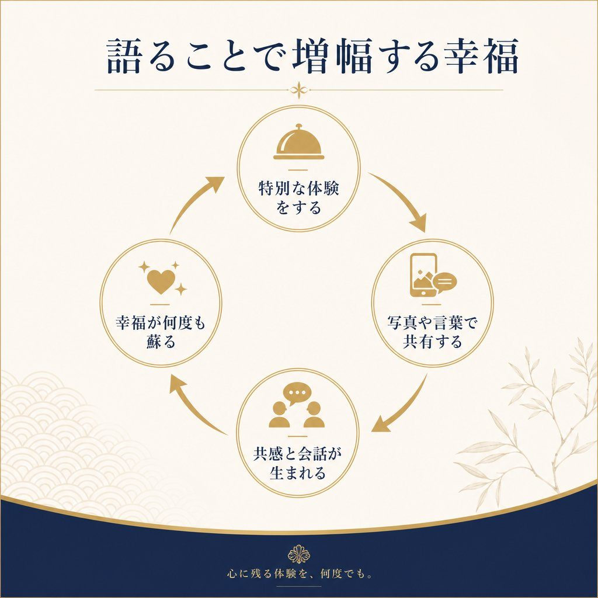
語ることで増幅する幸福
現代は、この「共有」がかつてなく容易になった時代です。
撮った写真を大切な人に見せる、思い出を言葉にして家族と語る——そのたびに、あなたの「記憶する自己」は幸福を再生します。
体験は、共有されるたびに価値を増す、不思議な資産なのです。
モノは分け合えば減りますが、経験は分かち合うほどに豊かになります。
だからこそ、ラグジュアリーホテルでの滞在は、単発の贅沢では終わりません。
それは、あなたのこれからの人生の「語れる物語」を一つ増やす行為なのです。
人生の豊かさとは、突き詰めれば「どれだけ心に残る物語を持っているか」なのかもしれません。
上質な一泊は、その物語のかけがえのない一章になります。
上質な体験が「自分の基準」を引き上げる
ラグジュアリーホテルでの滞在には、幸福感を超えた、もう一つの静かな効果があります。
それは、あなたの「感性の基準」を引き上げてくれるということです。
一流の空間に身を置くと、私たちの五感は自然と本物に触れます。
丁寧に淹れられたコーヒーの香り、職人が手がけた調度品の質感、計算し尽くされた光と静寂。
こうした本物の心地よさを一度知ると、日常の中でも「良いもの」を見分ける目が養われていきます。
それは決して浪費への入り口ではなく、むしろ「何が自分を本当に満たすのか」を知る、審美眼の育成なのです。
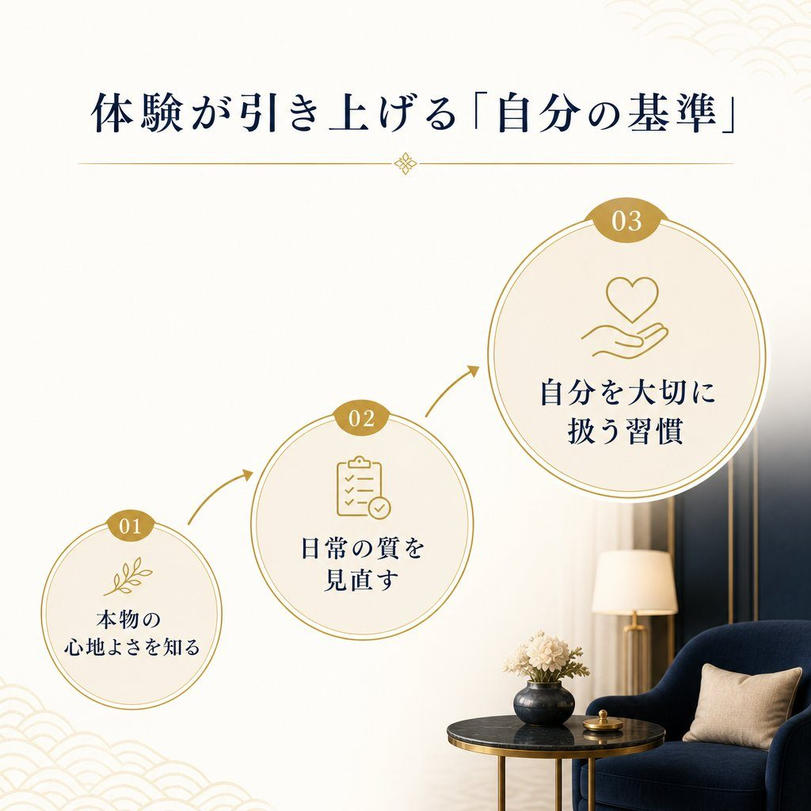
体験が引き上げる「自分の基準」
面白いことに、上質な体験を知った人は、日常の浪費が減ることさえあります。
「なんとなくの消費」に満足できなくなり、本当に価値あるものにお金と時間を使うようになるからです。
一泊の投資が、その後の生き方や選択の質までも高めてくれる——これは、金額には換算できない、大きなリターンです。
そして何より、上質な環境で過ごす自分を経験することは、「自分はこういう時間を持っていい人間だ」という自己イメージを育てます。
これは、次章で詳しく述べる自己肯定感の話にもつながっていきます。
ラグジュアリーホテルは、あなたの感性と自己認識を、静かに、しかし確かに高めてくれるのです。
幸せな記憶は、つらい時期の「心の支え」になる
経験がもたらす回想の幸福には、私たちの人生を根底から支える、もう一つの大切な役割があります。
それは、幸せな記憶が、つらい時期を乗り越える「心の支え」になるということです。
人生には、どうしても苦しい時期が訪れます。
仕事の重圧、人間関係の悩み、思うようにいかない日々。
そんなとき、私たちの心を支えてくれるのは、過去に味わった幸福の記憶です。
「あの旅で見た景色は美しかった」「あのホテルで過ごした時間は幸せだった」——そうした記憶は、暗闇の中の小さな灯りのように、私たちを励まし続けてくれます。
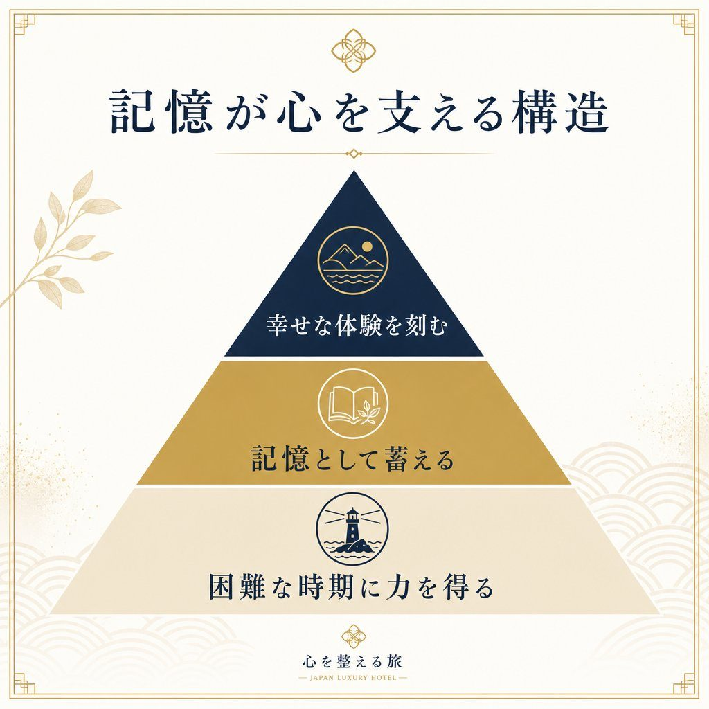
記憶が心を支える構造
カーネマンが説いた「記憶する自己」は、まさにこの役割を担っています。
私たちは、過去の幸福な記憶を何度も引き出し、そこから力を得て生きているのです。
だからこそ、幸せな記憶をどれだけ多く持っているかは、人生の「回復力（レジリエンス）」を左右すると言っても過言ではありません。
豊かな記憶の貯金は、人生の荒波を乗り越えるための、目に見えない財産なのです。
ラグジュアリーホテルでの上質な体験は、この「記憶の貯金」に、とりわけ鮮やかな一枚を加えてくれます。
感動のピークと美しい締めくくりで設計された滞在は、色あせにくく、長く心に残ります。
あなたが今、上質な体験に投資することは、未来のあなた自身への、優しい贈り物になるのです。
いつか訪れる困難な日に、その記憶はきっと、あなたをそっと支えてくれるでしょう。
この章のまとめ
ラグジュアリーホテルの幸福は、予約した瞬間の「期待」から始まり、滞在という「体験」を経て、一生残る「回想」へと続きます。
カーネマンの「ピーク・エンドの法則」が示すように、私たちの人生の満足感は記憶で決まり、その記憶は体験の頂点と締めくくりでつくられます。
ラグジュアリーホテルは、感動のピークと美しい終わりを設計することで、あなたの人生に消えない記憶の資産を刻んでくれるのです。
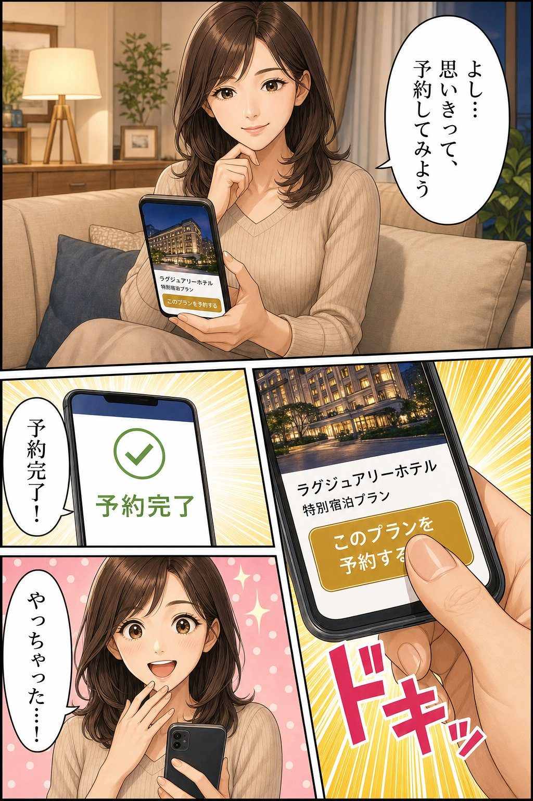
04第3章 眠りとウェルネス — 最高の環境が心と体を作り直す
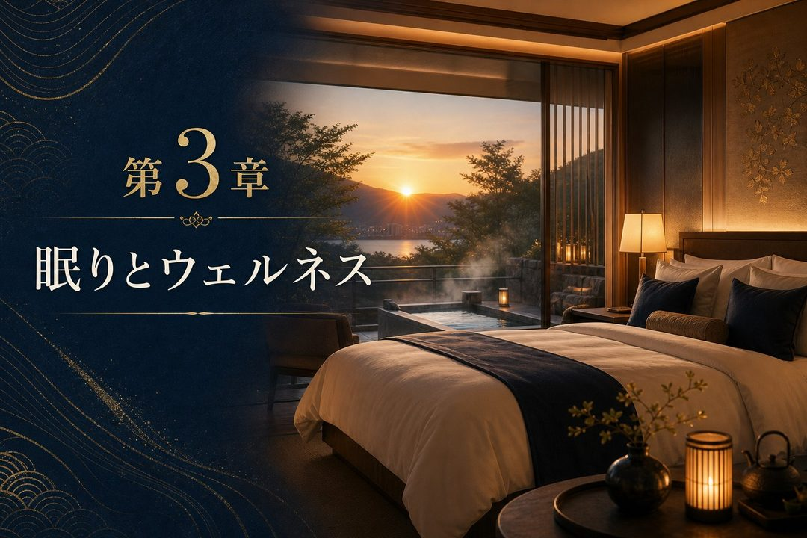
第3章 眠りとウェルネス
世界の富裕層が「睡眠」に投資し始めた
近年、世界のラグジュアリーホテル業界で最も注目されているキーワードをご存じでしょうか。
それは、贅沢な食事でも、豪華な内装でもありません。
「睡眠」です。
いま、富裕層の旅行者たちは、詰め込んだ観光スケジュールよりも、「回復的な睡眠」こそが滞在の最も価値ある体験だと考えるようになっています。
この潮流は「スリープツーリズム（睡眠観光）」と呼ばれ、世界中の一流ホテルが競って睡眠環境の向上に投資しています。
忙しく成功した人ほど、良質な睡眠がどれほど貴重で、日常では得がたいかを痛感しているのです。
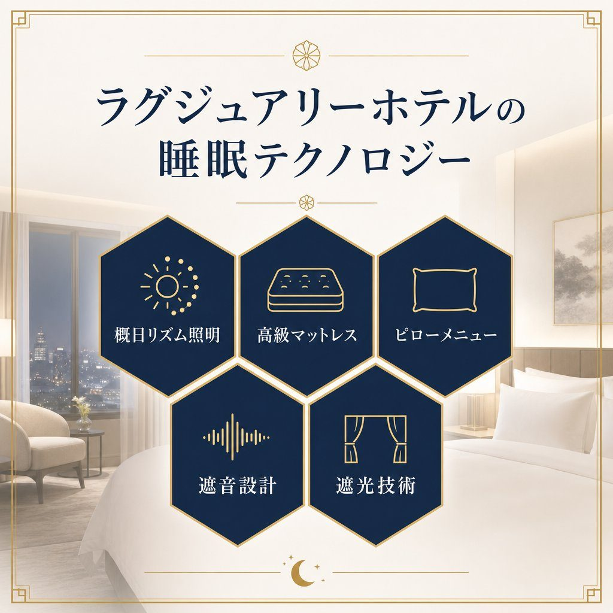
ラグジュアリーホテルの睡眠テクノロジー
一流ホテルが睡眠のために用意する設備は、驚くほど本格的です。
睡眠の専門家によるコンサルティング、体内時計に合わせた概日リズム照明、心を鎮めるアロマセラピー、最高級のマットレス、好みで選べるピローメニュー。
さらに、外の騒音を遮断する遮音設計、朝日を完璧に遮る遮光技術、清浄な空気を保つ空気質管理まで施されています。
これらはすべて、あなたを「人生で最高の眠り」へと導くために設計されています。
自宅ではどうしても得られない、深く、途切れない眠り。
それが、翌朝のあなたのコンディションを根本から変えるのです。
睡眠が変われば、人生が変わる
「たかが一晩の睡眠」と侮ってはいけません。
睡眠の質は、私たちの心身のあらゆる側面に影響を及ぼします。
質の高い睡眠をとった翌日、私たちは驚くほど頭が冴え、感情が安定し、前向きな気持ちになります。
反対に、睡眠不足が続くと、集中力は低下し、些細なことでイライラし、判断力も鈍ります。
つまり、睡眠は「翌日のあなた」そのものを決めているのです。
慢性的な疲労やストレスを抱える現代人にとって、深い眠りで心身をリセットする体験は、何よりの贅沢であり、必要な投資です。
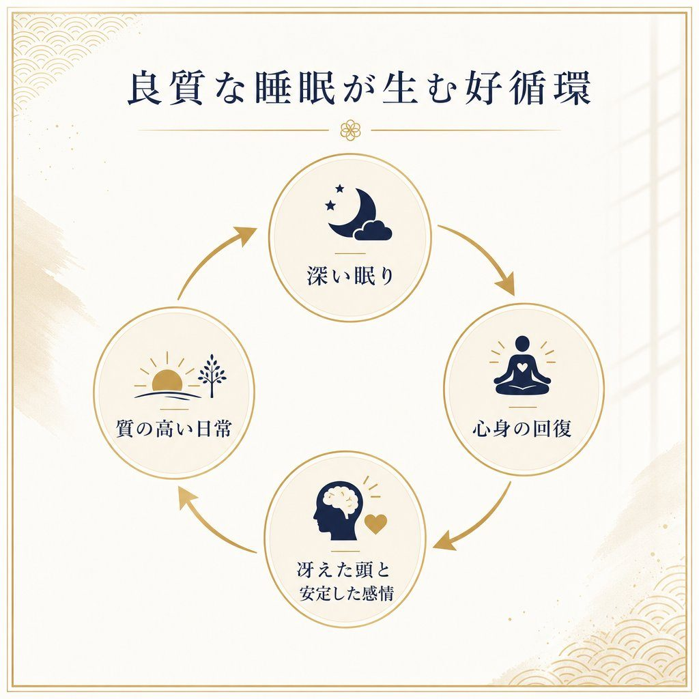
良質な睡眠が生む好循環
ラグジュアリーホテルでの一泊は、この好循環のスイッチを入れてくれます。
完璧に整えられた環境で、日頃の睡眠負債を一気に返済する。
そして翌朝、生まれ変わったような軽やかさで日常へ戻っていく。
この「リセット体験」こそ、ラグジュアリーホテルが提供する最も実用的で、最も本質的な価値なのです。
一泊の投資が、その後の数週間のパフォーマンスと心の安定を支えてくれます。
ウェルネスが高級ホテルの中心になった
睡眠と並んで、いま高級ホテルの中心的価値となっているのが「ウェルネス」——心身の健康と癒やしです。
その重要性を示すデータがあります。
ある調査では、海外の富裕層の約8割が「ウェルネス」を重視して日本への旅行を計画していると回答しました。
単なる観光ではなく、心身を整え、健やかになることを旅の目的とする人が、いまや主流になりつつあるのです。
これを受けて、一流ホテルは温泉やスパ、瞑想プログラム、ホリスティックな健康療法などを次々と拡充しています。
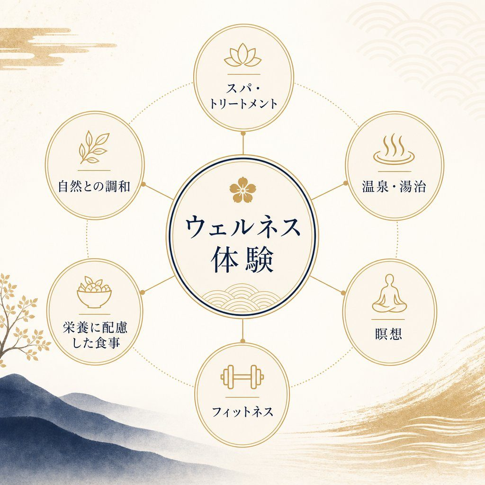
ラグジュアリーホテルのウェルネス体験
スパでのトリートメントは、凝り固まった体をほぐすだけでなく、深いリラクゼーションによって自律神経を整えます。
温泉や瞑想プログラムは、日々の緊張から心を解放します。
栄養バランスを考え抜いた食事は、体を内側から健やかにします。
ラグジュアリーホテルは、心・体・食のすべてを通じて、あなたを丸ごと回復させる「総合的な癒やしの場」になっているのです。
「癒やしの価値」は数字でも証明されている
「心身が回復する」というと感覚的な話に聞こえるかもしれません。
しかし、この価値は業界の数字にもはっきりと表れています。
ホテル業界の分析によれば、睡眠向上設備やスパ、総合的なウェルネス体験を提供する高級ホテルは、そうでないホテルと比べて客室単価（ADR）が約3%、利益指標（GOPPAR）が約4%高いという結果が出ています。
つまり、宿泊客はウェルネス体験に対して、明確に高い対価を支払う価値を認めているのです。
「癒やし」は、もはや曖昧な付加価値ではなく、市場が数字で評価する確かな価値になっています。
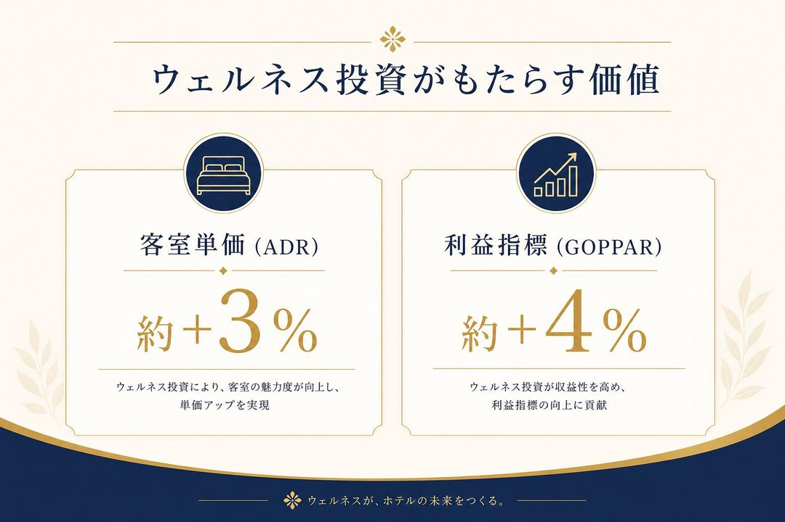
ウェルネス投資がもたらす価値
これは、宿泊する私たちにとっても重要な意味を持ちます。
上質なウェルネス体験には、それだけの価値がある——市場全体がそう認めているのです。
あなたが支払う一泊の料金は、心身を作り直すための、極めて合理的な投資だと言えるでしょう。
デジタルデトックスという最高の贅沢
現代人の心身を最も静かに、しかし確実にむしばんでいるもの——それは、絶え間ない情報とつながりの洪水です。
スマートフォンの通知、メール、SNS。
私たちの脳は、起きている間じゅう休むことなく刺激にさらされ、静かに疲弊し続けています。
ラグジュアリーホテルの滞在は、この状況からあなたを解放する、最高の「デジタルデトックス」の機会になります。
非日常の美しい空間に身を置くと、不思議と手元のスマートフォンを見る回数が減っていきます。
目の前の景色、料理の香り、静けさ——五感が「今ここ」に満たされるとき、私たちは初めて情報疲れから解放されるのです。
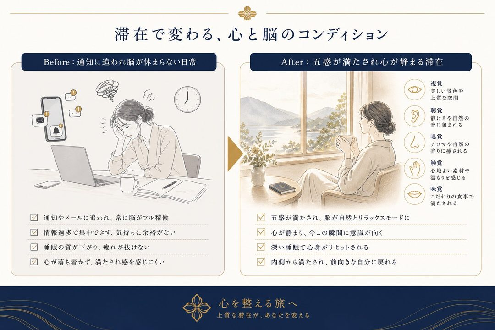
情報疲れからの解放
一流ホテルの環境は、この「五感のリセット」のために設計されています。
無駄をそぎ落とした美しい客室、心地よい香り、質のよい静寂、丁寧に整えられた光。
これらは単なる装飾ではなく、高ぶった神経を鎮め、脳を休ませるための仕掛けなのです。
自宅ではどうしても仕事や家事、スマートフォンが視界に入り、心が完全に休まることはありません。
だからこそ、日常から物理的に離れ、あえて上質な環境に身を置くことに、大きな意味があるのです。
一泊のあいだだけでも情報から離れ、自分の内側の声に耳を澄ませる。
その静かな時間は、忙しさの中で見失いがちな「本当に大切なもの」を思い出させてくれます。
何もしない贅沢、つながらない自由——それこそが、現代における最高のウェルネスなのかもしれません。
「食」がもたらす、内側からの健康
ウェルネスを語るとき、忘れてはならないのが「食」の存在です。
ラグジュアリーホテルの食体験は、単に美味しいだけではありません。
それは、心と体を内側から整える、洗練されたウェルネスの一部なのです。
一流ホテルのレストランでは、旬の食材を厳選し、栄養バランスを考え抜いた料理が供されます。
近年は、健康志向の高まりを受けて、体に負担の少ない調理法や、地元の新鮮な食材を活かしたメニューを打ち出すホテルが増えています。
「美味しさ」と「健やかさ」を両立させた食事は、それ自体が心身への贈り物です。
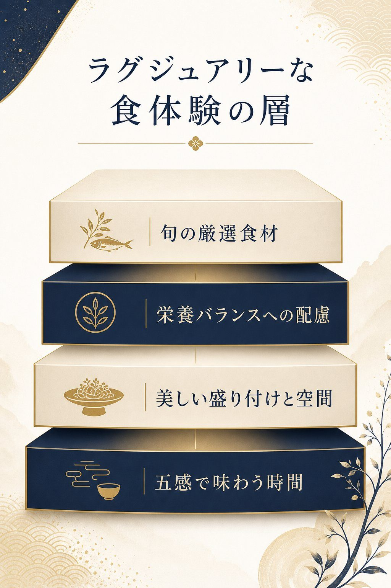
ラグジュアリーな食体験の層
さらに大切なのは、「どう食べるか」です。
日常の食事は、テレビやスマートフォンを見ながら、あるいは仕事の合間に、慌ただしく済ませてしまいがちです。
しかしラグジュアリーホテルでは、美しい空間で、大切な人と、ゆっくりと時間をかけて食事を味わうことができます。
一口ごとに味わい、香りを感じ、会話を楽しむ——この「丁寧に食べる」という体験そのものが、心を豊かに満たしてくれるのです。
食は、生きることの根源です。
その食を、最高の環境で、最高の状態で味わうこと。
それは五感を通じて心身を癒やし、日常では得られない充足感をもたらします。
上質な食体験は、あなたの体を健やかにするだけでなく、「丁寧に生きる」ことの喜びを思い出させてくれるのです。
温泉と自然——日本ならではの回復装置
ウェルネスの観点で、日本のラグジュアリーホテルには、世界に誇る大きな強みがあります。
それが「温泉」と「自然」です。
海外の富裕層が日本のウェルネスツーリズムに熱い視線を注ぐ理由の一つも、この日本独自の癒やし資源にあります。
温泉は、古くから日本人が「湯治」として活用してきた、心身回復の知恵の結晶です。
温かい湯にゆっくり浸かることは、体を芯から温め、筋肉の緊張をほぐし、深いリラクゼーションへと導きます。
忙しい日常で強張った心と体が、湯の中で少しずつほどけていく——この感覚は、何物にも代えがたい癒やしです。
名だたるラグジュアリーホテルやリゾートが温泉を備えているのは、決して偶然ではありません。
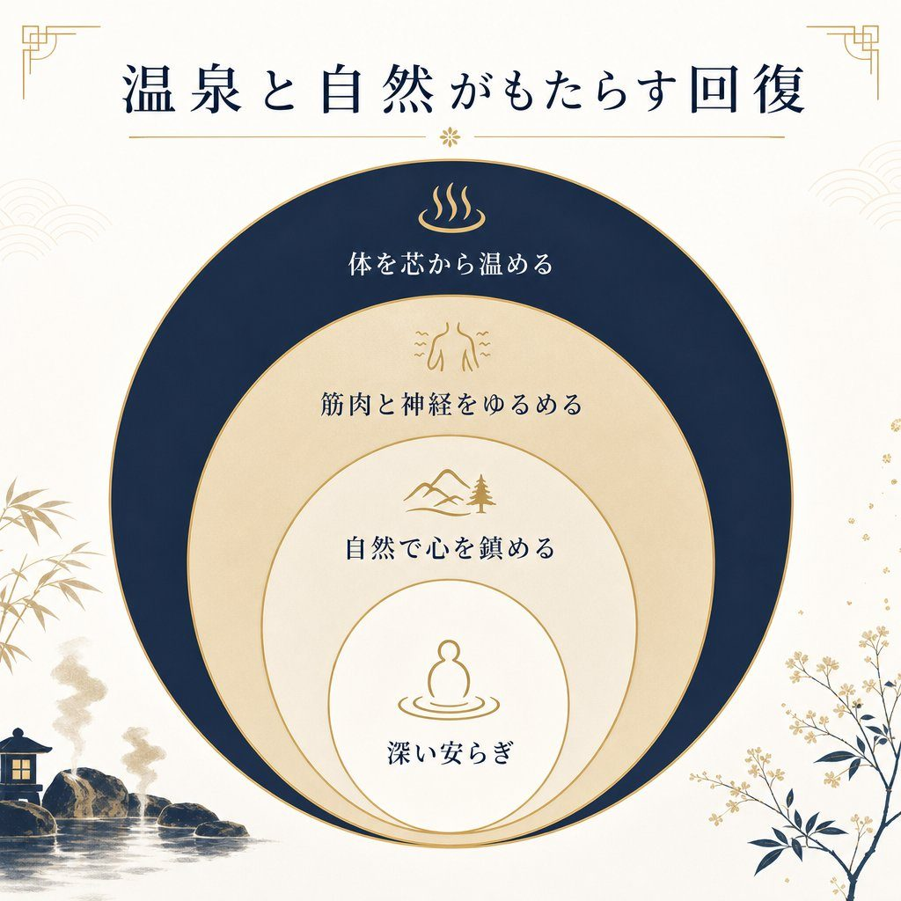
温泉と自然がもたらす回復
そして、多くの上質なホテルは、美しい自然の中に佇んでいます。
緑豊かな山あい、波の音が聞こえる海辺、四季の移ろいを映す庭園。
自然に囲まれた環境に身を置くこと自体に、心を鎮め、ストレスを和らげる効果があることは、広く知られています。
窓の外に広がる雄大な景色を眺めるだけで、日々の悩みが小さく思えてくる——そんな経験をした人も多いのではないでしょうか。
温泉の温もり、自然の静けさ、季節の彩り。
これらが一体となったとき、ラグジュアリーホテルは、単なる宿泊施設を超えた「心身を根本から癒やす聖域」になります。
日本に暮らす私たちは、世界が憧れるこの回復装置を、身近に享受できる幸運な立場にいるのです。
次の休日、ぜひその恵みを味わってみてください。
この章のまとめ
世界の富裕層は、いま「睡眠」と「ウェルネス」に投資しています。
ラグジュアリーホテルは、概日リズム照明や最高級の寝具、スパや温泉、瞑想プログラムを通じて、あなたの心と体を根本から作り直してくれます。
質の高い睡眠は翌日のあなたそのものを変え、ウェルネス体験は自律神経と心を整えます。
そしてその価値は、ADRやGOPPARといった業界指標にも明確に表れています。
ラグジュアリーホテルは、心身を回復させる「最高のメンテナンスの場」なのです。
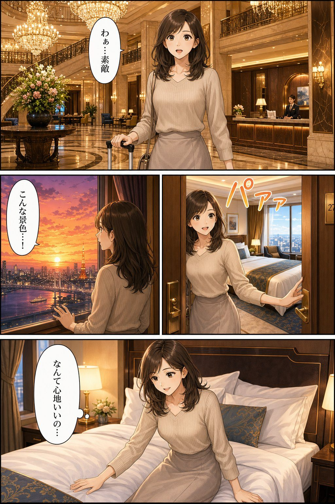
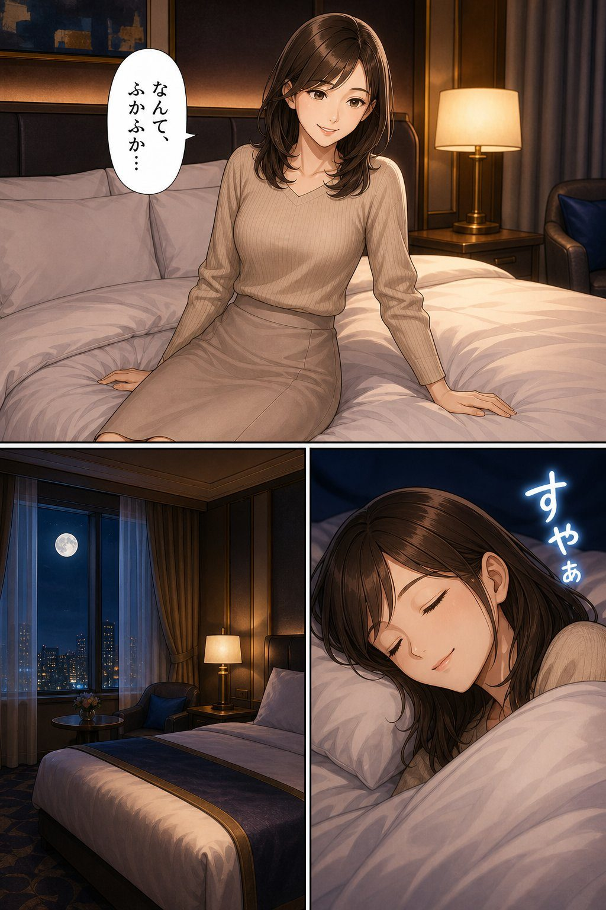
05第4章 一流のホスピタリティ — 「大切にされる体験」が自己肯定感を育てる
第4章 一流のホスピタリティ
リッツ・カールトンが9年連続1位を取り続ける理由
ラグジュアリーホテルの価値は、美しい施設や快適な設備だけではありません。
むしろ、多くの人が「忘れられない」と語るのは、そこで受けた「人のおもてなし」——ホスピタリティです。
その象徴が、ザ・リッツ・カールトンです。
J.D.パワーの高級ホテル顧客満足度調査で、リッツ・カールトンは9年連続で第1位を獲得し続けています。
客室の内装や設備の快適さも高く評価されていますが、それ以上に人々の心をつかんでいるのは、マニュアルを超えた、心のこもったサービスです。
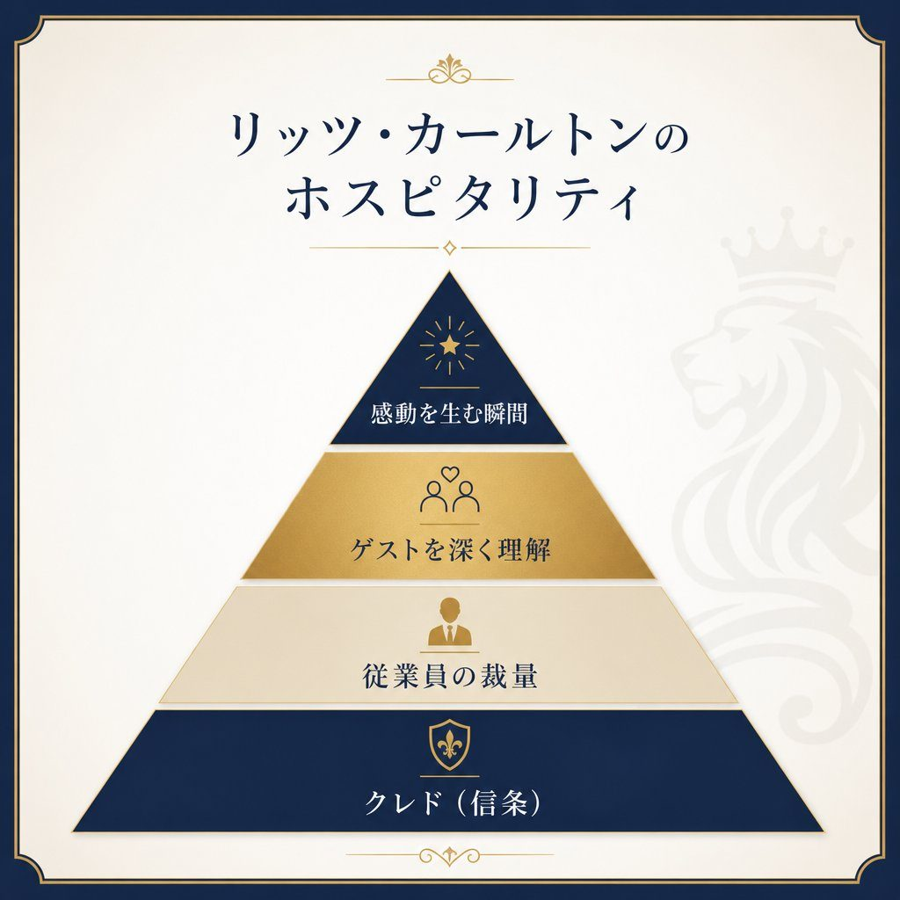
リッツ・カールトンのホスピタリティ
リッツ・カールトンには「クレド」と呼ばれる信条があり、全従業員がそれを共有しています。
有名なのは、従業員一人ひとりに「ゲストのために1日2,000ドルまで自分の判断で使える」という決裁権が与えられていることです。
上司の許可を待つのではなく、目の前のゲストのために、その場で最善を尽くす。
この自律と裁量こそが、マニュアルでは決して生まれない「感動の瞬間」を生み出しているのです。
忘れ物を届けるために従業員が遠方まで向かった話、宿泊客の何気ない一言を覚えていて次の滞在で叶えた話——リッツ・カールトンには、こうした伝説的なエピソードが数多くあります。
それは、ゲストを「客」としてではなく、「一人の大切な人」として見ているからこそ生まれるものです。
「大切にされる体験」が自己肯定感を育てる
一流のホスピタリティがもたらすものは、単なる快適さや便利さではありません。
もっと深い、心の栄養です。
私たちは日常の中で、しばしば「大勢の中の一人」として扱われます。
効率が優先される社会で、一人の人間として丁寧に向き合ってもらう機会は、意外なほど少ないものです。
だからこそ、ラグジュアリーホテルで受ける「あなたのために」という心のこもったおもてなしは、深く心に響きます。
名前で呼ばれ、好みを覚えてもらい、先回りして気遣ってもらう。
その一つひとつが、「自分は大切にされる価値のある存在だ」という実感——すなわち自己肯定感——を育ててくれるのです。
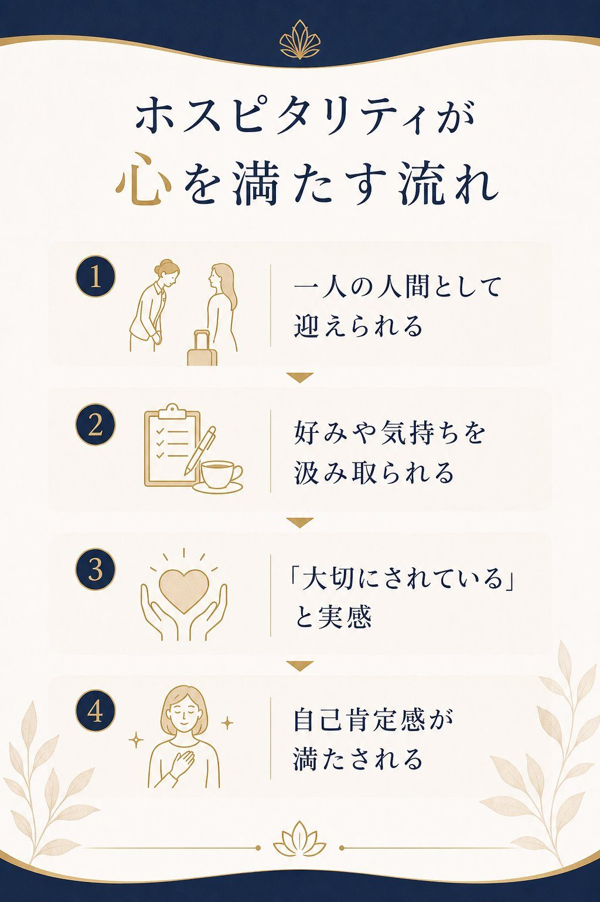
ホスピタリティが心を満たす流れ
これは、決して大げさな話ではありません。
人は、丁寧に扱われることで、自分自身を大切にする気持ちを取り戻します。
頑張り続けて疲れた心に、「あなたはここで、ただ大切にされていい」というメッセージが染み込んでいく。
ラグジュアリーホテルの滞在は、自分を労わり、肯定するための時間でもあるのです。
日常で擦り減った自己肯定感を、そっと満たし直してくれる場所——それが一流のホテルです。
大切な人との時間が、人間関係を豊かにする
ラグジュアリーホテルの価値は、自分自身への効果にとどまりません。
大切な人と過ごすとき、その価値は何倍にも膨らみます。
記念日に、家族の節目に、あるいは大切な人への感謝を伝えたいとき。
上質な空間と時間は、普段は言えない気持ちを自然に引き出してくれます。
美しい景色を前にした食事、静かな部屋での語らい——日常の喧騒から離れた特別な環境は、人と人の心の距離を縮めます。
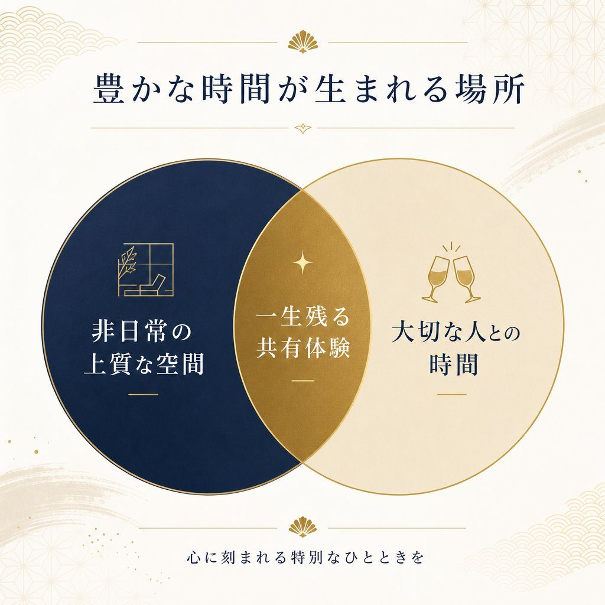
豊かな時間が生まれる場所
そして忘れてはならないのは、経験には「孤独を癒す力」があることです。
研究によれば、経験への支出は、モノへの支出よりも人の孤独感を和らげる効果があることが確認されています。
誰かと分かち合った特別な体験は、二人の間に「共通の物語」を刻み、その後の関係を温め続けます。
ラグジュアリーホテルで共に過ごした記憶は、大切な人との絆を深める、かけがえのない財産になるのです。
親を旅行に連れて行く、パートナーと記念日を祝う、自分へのご褒美として一人で泊まる——どんな形であれ、その体験は「大切にする・される」という人間本来の喜びを、あなたの人生に呼び戻してくれます。
日本の「おもてなし」が世界に選ばれる理由
ホスピタリティを語るうえで、私たち日本人が誇るべき文化があります。
それが「おもてなし」です。
相手の立場に立ち、見返りを求めず、先回りして心を尽くす——この精神は、世界の富裕層が日本のラグジュアリーホテルに惹かれる大きな理由になっています。
実際、海外の富裕層が日本旅行に求めるものとして「ウェルネス」とともに高く評価しているのが、日本ならではのきめ細やかなサービスです。
旅館の女将の心配り、茶道に通じる「一期一会」の精神、相手が言葉にする前に察する感性。
これらは、マニュアル化された欧米型サービスとは一線を画す、日本独自のホスピタリティとして、世界から羨望のまなざしを向けられています。
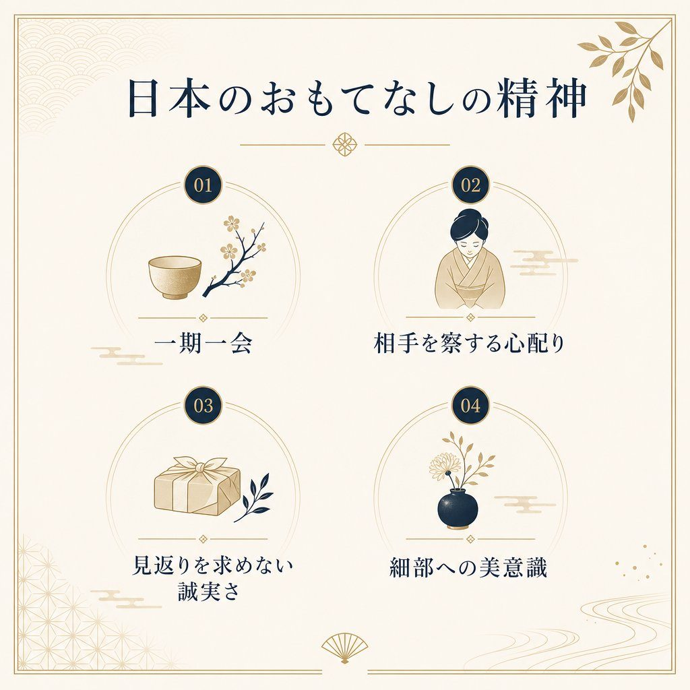
日本のおもてなしの精神
近年、日本には世界的なラグジュアリーブランドのホテルが続々と進出しています。
その背景には、日本のおもてなし文化と、洗練されたサービス人材の存在があります。
世界基準の設備と、日本ならではの心配りが融合したホテルが、いま国内で次々と生まれているのです。
私たちは、世界が憧れる最高峰のホスピタリティを、自国で気軽に体験できる幸運な時代に生きています。
一流ホテルで受けるおもてなしは、私たちに「人に大切にされる」喜びを教えてくれると同時に、「人を大切にする」ことの尊さを思い出させてくれます。
質の高いホスピタリティに触れることは、自分自身の他者への接し方をも磨く、静かな学びの機会でもあるのです。
上質なサービスを知ることは、あなた自身の品格をも育ててくれます。
何気ない交流が、旅を忘れられないものにする
ラグジュアリーホテルの思い出を振り返るとき、多くの人が語るのは、豪華な設備よりも、スタッフとの温かな交流だったりします。
人の心を動かすのは、結局のところ、人の心なのです。
コンシェルジュが教えてくれた地元の隠れた名店、天気を気遣ってくれた一言、子どもに向けられた優しい笑顔、記念日をさりげなく祝ってくれたサプライズ——こうした「人と人との小さな触れ合い」こそが、その滞在を唯一無二のものにします。
第2章で学んだ「ピーク・エンドの法則」で言えば、こうした心温まる瞬間が、記憶の「ピーク」として深く刻まれるのです。
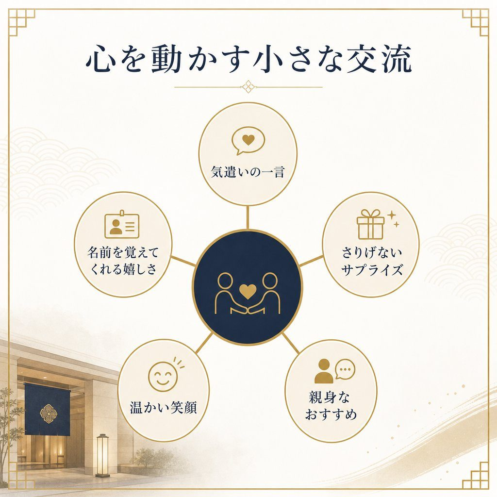
心を動かす小さな交流
こうした交流は、日常で人との温かなつながりが希薄になりがちな現代人にとって、思いのほか深い癒やしになります。
効率と匿名性が支配する社会の中で、「一人の人間として、心から歓迎される」という経験は、私たちの心を静かに潤してくれるのです。
ラグジュアリーホテルは、最新の設備やデザインを競っているように見えて、その本質は「人の温かさ」にあります。
どんなに時代が進んでも、人を最も感動させるのは、心のこもったおもてなしなのです。
あなたがこれから訪れるホテルでも、きっと忘れられない出会いと交流が、あなたを待っています。
それは、旅の思い出を何倍にも豊かにしてくれるはずです。
この章のまとめ
一流のホスピタリティは、リッツ・カールトンに象徴されるように、マニュアルを超えた「一人の人間として大切にする」心から生まれます。
丁寧に迎えられ、気遣われる体験は、日常で擦り減った自己肯定感を満たし直してくれます。
さらに、大切な人と過ごす上質な時間は、心の距離を縮め、共有した記憶を通じて絆を深めます。
経験は孤独をも癒します。
ラグジュアリーホテルは、自分と大切な人を「大切にする」ための、かけがえのない場所なのです。
06第5章 最初の一歩 — 後悔しないホテル選びと豊かさを最大化する泊まり方
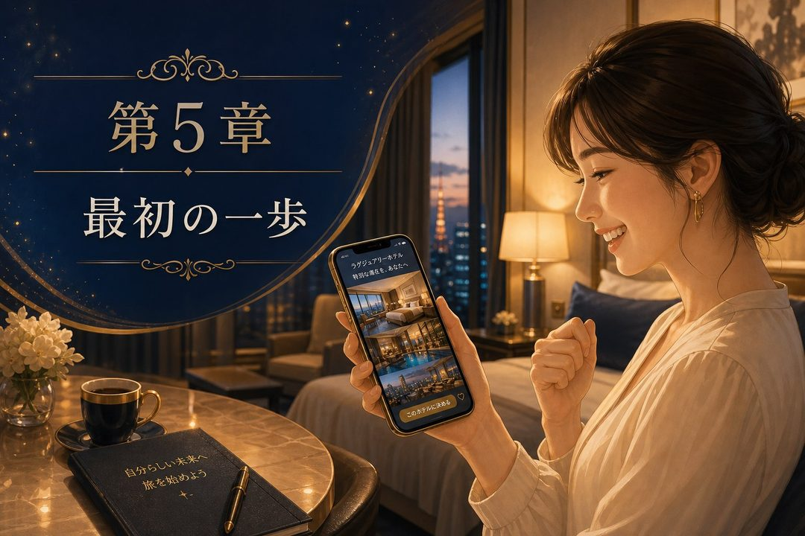
第5章 最初の一歩
「目的」から選べば、後悔しない
ここまで読んで、「一度泊まってみたい」と思っていただけたなら、いよいよ実践です。
とはいえ、「どのホテルを選べばいいのか分からない」という声もよく聞きます。
後悔しないホテル選びの鍵は、たった一つ。
「何のために泊まるのか」という目的から逆算することです。
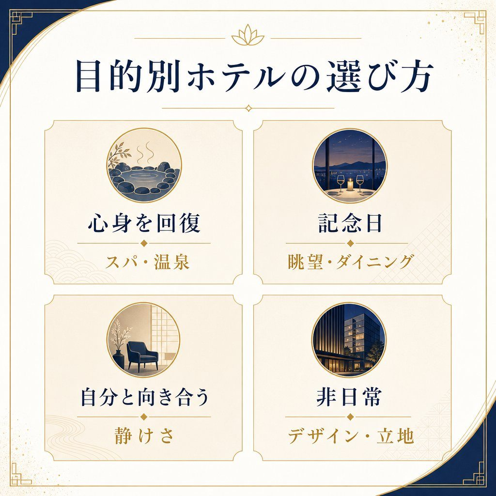
目的別ホテルの選び方
日々の疲れを癒やしたいなら、スパや温泉、自然に囲まれたリゾートホテルが向いています。
大切な人と記念日を祝いたいなら、美しい眺望や評判のダイニングを持つホテルを。
自分自身と静かに向き合いたいなら、静けさと上質な客室を重視したホテルを。
都会の非日常を味わいたいなら、洗練されたデザインと便利な立地の都市型ホテルを選ぶとよいでしょう。
目的が定まれば、無数の選択肢は自然と絞られていきます。
初めての一軒は、背伸びしすぎないことも大切です。
世界的なブランドの旗艦ホテルもいいですが、まずは自分が「心地よい」と感じられる場所を選ぶこと。
口コミやレビューを参考にしつつ、写真を見て「ここで過ごしたい」と心が動くかどうかを、何より大切にしてください。
費用への不安を、賢く乗り越える
「やっぱり高い」という不安も、工夫次第で和らげられます。
ラグジュアリーホテルを賢く楽しむための、いくつかの方法をご紹介します。
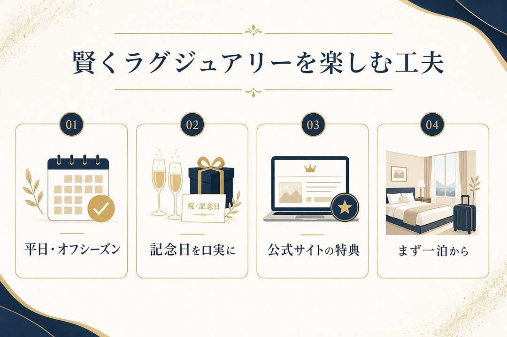
賢くラグジュアリーを楽しむ工夫
第一に、平日やオフシーズンを狙うことです。
同じホテルでも、時期によって料金は大きく変わります。
週末や連休を避けるだけで、驚くほど手が届きやすくなります。
第二に、記念日や誕生日を「口実」にすること。
年に一度の特別な日なら、心理的な罪悪感も和らぎ、ホテル側も特別な計らいをしてくれることがあります。
第三に、公式サイトの予約特典を活用することです。
多くのラグジュアリーホテルは、公式予約者に朝食や館内利用のクレジット、部屋のアップグレードなどの特典を用意しています。
第四に、最初から連泊や豪華なプランを狙わず、まずは一泊から始めること。
一度体験すれば、その価値は必ず腑に落ちます。
大切なのは、完璧を目指すより、まず一歩を踏み出すことなのです。
豊かさを最大化する「三段階の楽しみ方」
せっかく泊まるなら、その価値を最大限に引き出したいものです。
第2章で学んだ「期待・滞在・回想」の三段階を、意識的に楽しみ尽くしましょう。
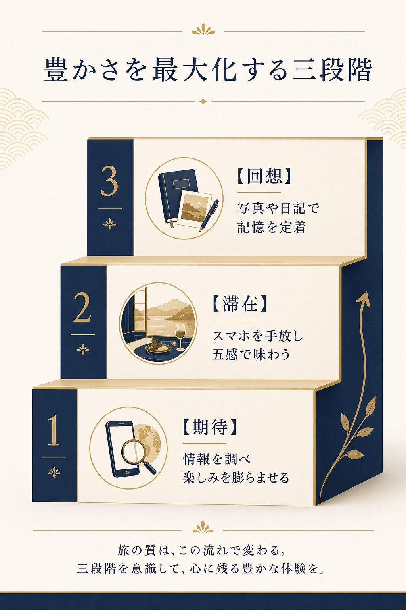
豊かさを最大化する三段階
【期待の段階】予約したら、そのホテルのことを調べて、楽しみを存分に膨らませましょう。
レストランのメニュー、スパの内容、周辺の見どころ。
当日を心待ちにする時間そのものが、幸福の源泉です。
この「待つ楽しみ」を、けっして省略しないでください。
【滞在の段階】当日は、思いきってスマートフォンを手放し、五感で「今」を味わいましょう。
部屋の香り、シーツの肌ざわり、窓の外の景色、料理の味わい。
カーネマンの言う「経験する自己」を、心ゆくまで解放するのです。
そして、その日一番の「ピーク」となる瞬間——特別なディナーや朝焼けの眺め——を意識して味わうと、記憶により深く刻まれます。
【回想の段階】帰宅後は、写真を見返したり、短い日記を書いたりして、記憶を定着させましょう。
思い出は、振り返るほどに輝きを増します。
大切な人と語り合えば、その体験は共有の物語となり、二度、三度と幸福を運んでくれます。
よくある不安への答え
最初の一歩を踏み出そうとするとき、心に浮かぶ不安があるものです。
ここでは、多くの人が抱く代表的な不安に、一つずつお答えします。
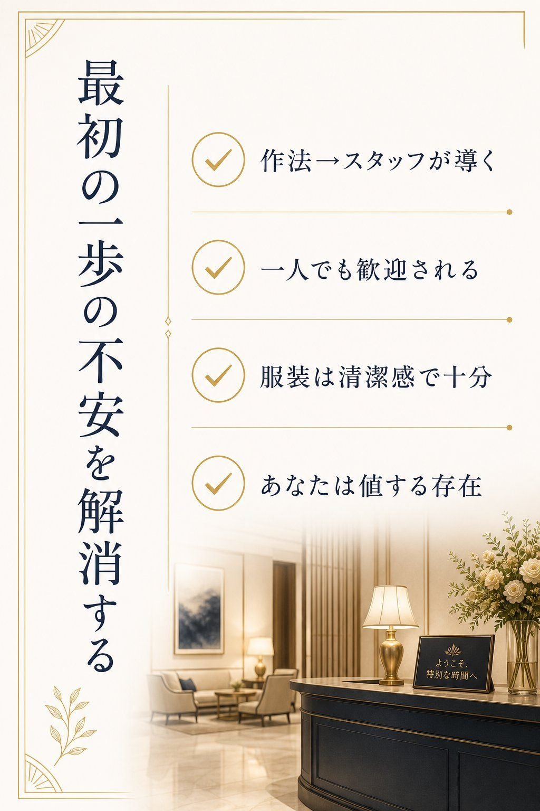
最初の一歩の不安を解消する
「作法やマナーが分からない」——心配は無用です。
一流ホテルのスタッフは、ゲストがくつろげるよう、自然にさりげなく振る舞いを導いてくれます。
むしろ分からないことは素直に尋ねれば、丁寧に教えてくれます。
格式に萎縮する必要はまったくありません。
「一人で泊まっても浮かないか」——まったく問題ありません。
近年、自分へのご褒美として一人で上質な滞在を楽しむ人は急増しています。
一人だからこそ、誰にも気兼ねなく、自分のためだけの時間を満喫できるのです。
「服装や持ち物が心配」——特別な正装は必要ありません。
清潔感のある服装であれば十分です。
大切なのは、格好よりも、その時間を楽しもうという気持ちです。
そして「自分には分不相応ではないか」という不安——それは、初めて泊まる誰もが感じるものです。
しかし滞在を終えたあなたは、きっとこう思うはずです。
「自分は、この時間を過ごすに値する存在だった」と。
泊まった翌日から始まる、小さな変化
ラグジュアリーホテルの本当の価値は、実は「帰ってきた後」に表れます。
一泊の体験は、あなたの日常に、いくつもの小さな、しかし確かな変化をもたらしてくれるのです。
深く眠れた翌日、あなたは自分のコンディションの違いに驚くでしょう。
頭が冴え、感情が穏やかで、いつもより優しくなれる自分に気づくはずです。
「良い睡眠とは、こういうものだったのか」と実感すると、日常の睡眠環境を見直すきっかけにもなります。
よい枕を買ってみる、寝室の照明を整える——ホテルで得た気づきが、毎日の生活の質を静かに底上げしていくのです。
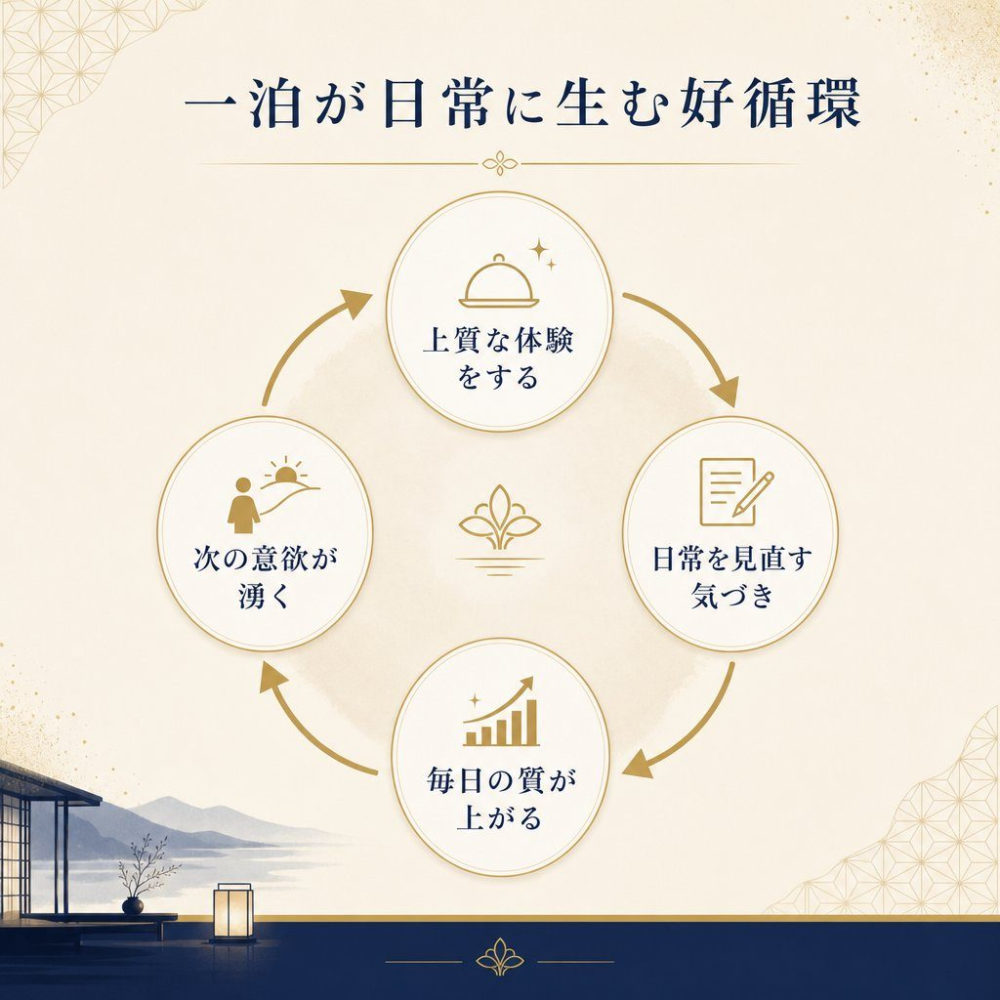
一泊が日常に生む好循環
変化は、心の面にも表れます。
「自分を大切にする時間を持ってもいいのだ」という許可を、あなたは自分自身に与えられるようになります。
頑張りすぎてしまう人ほど、この「自分を労わる」という感覚を忘れがちです。
一度その心地よさを知ると、日々の中でも意識的に休息を取り、自分をいたわる習慣が育っていきます。
そして、その体験は次への意欲を生みます。
「今度はあのホテルに行ってみたい」「次は大切な人を連れて行こう」——上質な体験は、これからの人生に新しい目標と楽しみを与えてくれるのです。
一泊は、決して一度きりで終わりません。
それは、あなたの人生をより豊かな方向へと導く、小さな、けれど確かな一歩なのです。
一歩を踏み出したあなたへ
本書の最後に、伝えたいことがあります。
ラグジュアリーホテルへの一泊は、「贅沢な人だけのもの」ではありません。
自分の人生を大切にしたいと願う、すべての人のためのものです。
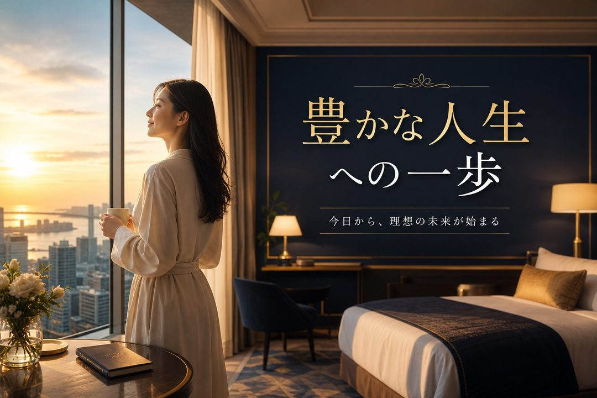
豊かな人生への一歩
頑張り続けるあなたには、自分を労わり、心身を回復させ、大切な記憶を刻む時間が必要です。
それは決して逃避や浪費ではなく、より良く生きるための、前向きで賢い投資です。
科学が示すとおり、その一泊は期待・滞在・回想の三段階であなたを幸福にし、心と体を作り直し、自己肯定感を満たし、大切な人との絆を深めてくれます。
さあ、次の休日、あなたが泊まる一軒を探してみてください。
その予約ボタンを押した瞬間から、あなたの人生は少しずつ豊かに色づき始めます。
一泊の投資が、あなたの人生の景色を変える——それは、決して大げさな話ではないのです。
この章のまとめ
後悔しないホテル選びの鍵は、「目的」から逆算することです。
費用への不安は、平日やオフシーズン、公式特典の活用、まず一泊から始めることで乗り越えられます。
そして、期待・滞在・回想の三段階を意識的に楽しむことで、その価値は最大化されます。
ラグジュアリーホテルへの一泊は、自分の人生を大切にするための、誰にでも開かれた賢い自己投資なのです。
07おわりに あなたの人生に、上質な余白を
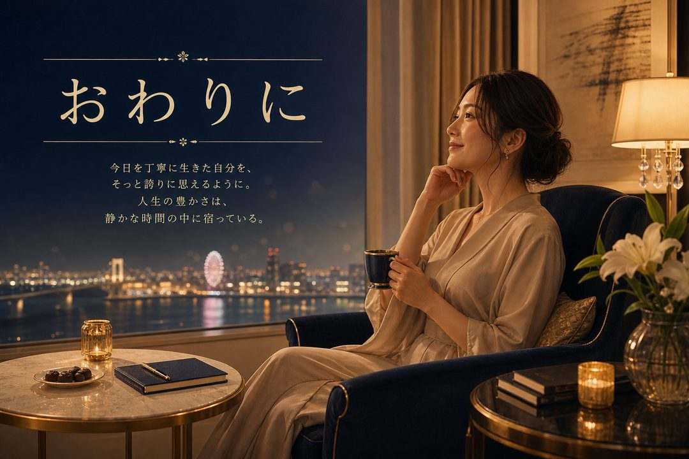
おわりに
最後まで読んでいただき、ありがとうございました。
本書の冒頭で、私はかつて「一泊数万円のホテルなんてもったいない」と思っていた、とお話ししました。
いま、その私は確信を持ってこう言えます。
あの一泊は、私が人生でした最も賢い投資の一つだった、と。
私たちは、日々あまりにも多くのものを抱えて生きています。
仕事、責任、人間関係、終わりのないタスク。
気づけば、自分自身を大切にすることを、いちばん後回しにしてしまう。
そんな毎日の中で、ラグジュアリーホテルの一泊は、人生に「上質な余白」を与えてくれます。
何も生産しなくていい、ただ心地よく在るだけでいい——そんな時間の価値を、現代人はもっと知るべきなのかもしれません。
本書で見てきたように、その価値は感覚だけの話ではありません。
コーネル大学のギロビッチが示した「経験の幸福」、カーネマンの「記憶する自己」とピーク・エンドの法則、旅行が快楽適応に抵抗する力、世界の富裕層が投資する睡眠とウェルネス、そしてリッツ・カールトンに象徴されるホスピタリティ。
科学と現実のデータが、口をそろえて「上質な体験は人生を豊かにする」と告げているのです。
もちろん、ラグジュアリーホテルは万能薬ではありません。
けれど、それは間違いなく、疲れた心をほどき、自分を取り戻し、大切な記憶を刻むための、確かな一つの手段です。
年に一度でも、数年に一度でもいい。
自分の人生を労わる時間を、意識的に持ってみてください。
あなたの人生に、上質な余白を。
その最初の一泊が、これからのあなたの毎日を、少しだけ豊かに、少しだけ優しく変えてくれることを、心から願っています。
次の休日、あなたが心惹かれる一軒に出会えますように。
◀ 他の書籍を見る© 竹谷知悦 / 特別プレゼント版